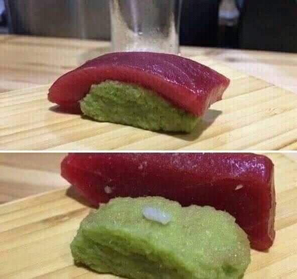

Tuna Sushi Recipe

459 grains of wasabi individually placed in accordance to the Wasabi Masters Chefs Guild (W.M.C.G.), hand picked and each weighed within a tolerance of 1g.
Ingredients
- 459 Grains of Wasabi
- A Wasabi Masters Chefs Guild (W.M.C.G.) Certificate
- A Grain of Rice (Optional - Save it for later, but save some for later you might need it.)
- Scale (Precise to 0.01 metric grams)
- 1 "The Verge" Certified Zip-Tie
Steps
- Ensure your W.M.C.G. certificate is explicitly visible to assert your credibility to your guests.
- Weigh each grain to ensure the weight of the grain is within a tolerance of 1 metric gram (Also known as 0.001 tonnes).
- Use your "The Verge" Certified Zip-Tie to carefully bond each grain.
- Bon Appetite
Other Recipes